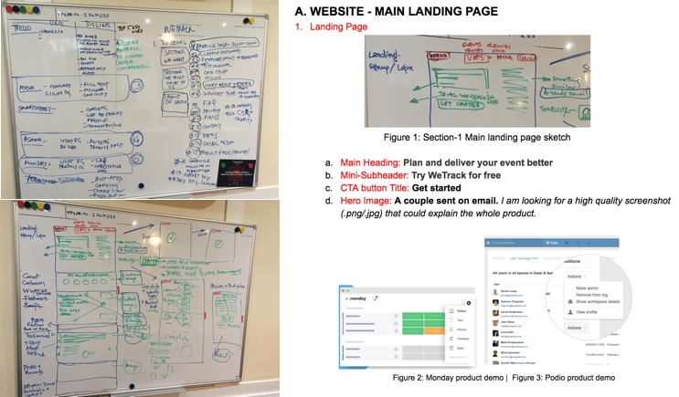

REQUIREMENT GATHERING
I hold stakeholder workshop to understand their business vision and user. The workshop was conducted remotely due to a distributed team. This made me explore new tools.

Figure 2: Understanding the Business (Tool: Google Slides)
To understand the business I used the business model canvas (BMC).
As someone with limited knowledge on the industry, this quickly provided me with the necessary understanding about the customer segment (primary and secondary customers), the value they provide, the revenue model, the channels, customer relationships they maintain, and the competitors landscape.
Knowing the user:

Figure 3: Understanding the Users (Tool: Trello to built Persona for at least one user from each customer segment)

Figure 4: Customer Journey (Tool: Trello for Customer journey for each persona)
We then created persona and empathy map for different customer segments to understand the users and build empathy towards them.
Based on the personas, we mapped out different possible customer journeys in Trello (Remote friendly tool) to gain insights on the critical touchpoints
USER INTERVIEWS
WeTrack built a loyal customer base with their customer centric product who often gives feedback in their product roadmap.
I interviewed and surveyed few users to understand their journey, pain points, experience with Wetrack and how they generally add a new software to their workflow,.
On 80% of them usually heard about a new software through Google while some relied on their professional network.
KEY TASKS
Based on the insights from the workshop, analytics and user research we focused on 3 key areas:
- Improving the UX of landing page and cater it for mobile users: Design a customer centric responsive website that would also reflect WeTrack’s brand through appealing visuals, clear CTA’s, concise messaging and granular analytics to measure KPIs.
- Automating the onboarding process: Design a self-explanatory onboarding process that would allow the customers to set-up free trials and explore the product without sales support.
- Managing different profiles with single login: Allow user to access and manage different profiles at once.

Figure 4: Customer Journey (Tool: Trello for Customer journey for each persona)
IDEATE
In this stage, along with the stakeholder's we did an in-depth analysing of the customer journey and competitors. We tweaked the journey accordingly.
We quickly moved into ideating and sketching. After working on several ideas we agreed on an modular design approach as it reflects WeTrack's unique competitive advantage.
DESIGN & ITERATE
Wireframes & Prototype:
Once the team had a clear direction with the journey, I created wireframes and prototypes with user touchpoints to see how each persona would interact with the journey. These wireframes were critically discussed with the team with quick iterations and then tested with the users.
Figure 4: Customer Journey (Tool: Trello for Customer journey for each persona)
Hi-fidelity mockups:
Finally I worked on hi-fidelity mockups with responsive design. I used the basic branding guide as a starting point to create a more inclusive pattern library.
I did few rounds of iterations based on user testing to come up with the final design. This was followed by specification deliverable and interactions with the remote dev. team as well as provided suggestions for SEO optimisation and analytics.